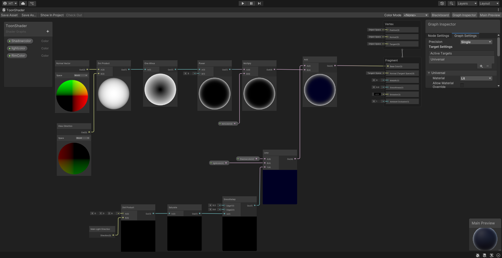
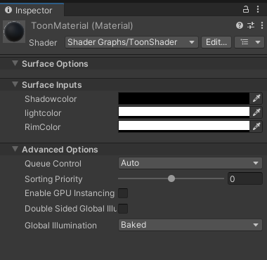
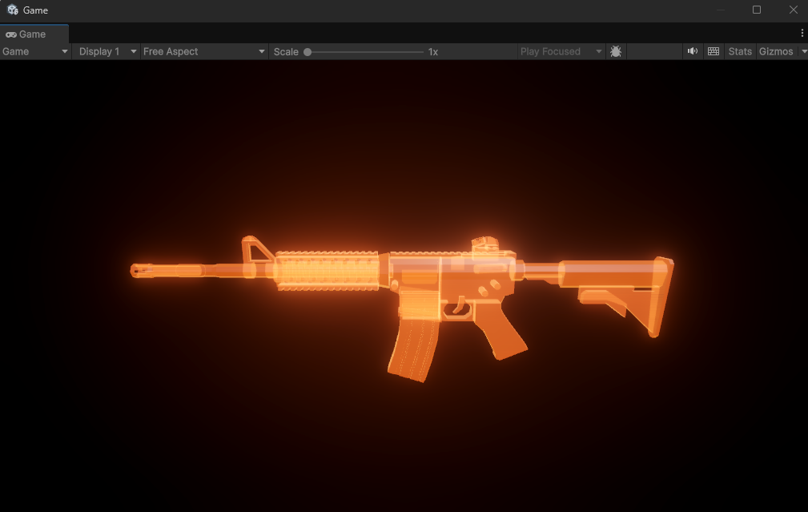
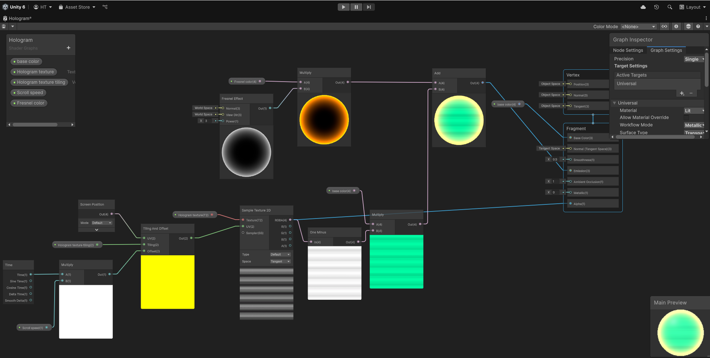
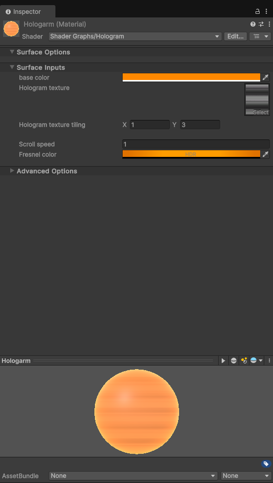

Tight, readable mechanics, AI behaviors and real-time shaders in Unity & Unreal — built in C#, C++ and Shader Graph. Prototypes that feel alive within a week, plus the editor tools and pipelines to ship them faster next time.
Three real-time shaders built in Unity 6's Shader Graph — toon shading, a hologram pass and a noise-driven dissolve. Each card shows the result, the graph and the material inspector side-by-side.
01
Toon Shader
A three-band toon shader with a rim-light pass — uses a Smoothstep on N·L to quantize the lighting, then lerps between shadow and light colors before adding a fresnel-shaped rim on top. Exposed three colors so the look reads in any palette.
Unity 6URPShader GraphStylized


02
Hologram Shader
A scrolling scan-line hologram with a fresnel edge glow. Screen-space UVs drive the stripe texture so the lines stay tight to the camera, and the fresnel falloff is multiplied into emission for the rim glow — used on a rifle pickup as a "next weapon" highlight.
Unity 6URPFresnelTransparent



03
Dissolve Shader
A noise-mask dissolve driven by time — Simple Noise feeds an alpha clip threshold, while a Step of the same noise (offset by edge width) drives the emissive ring at the dissolution front. HDR edge color so it picks up bloom in URP.